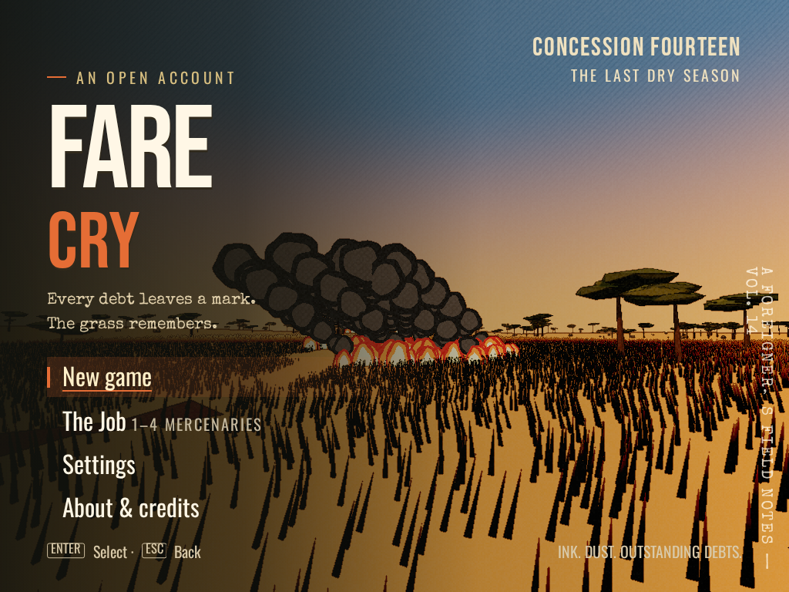
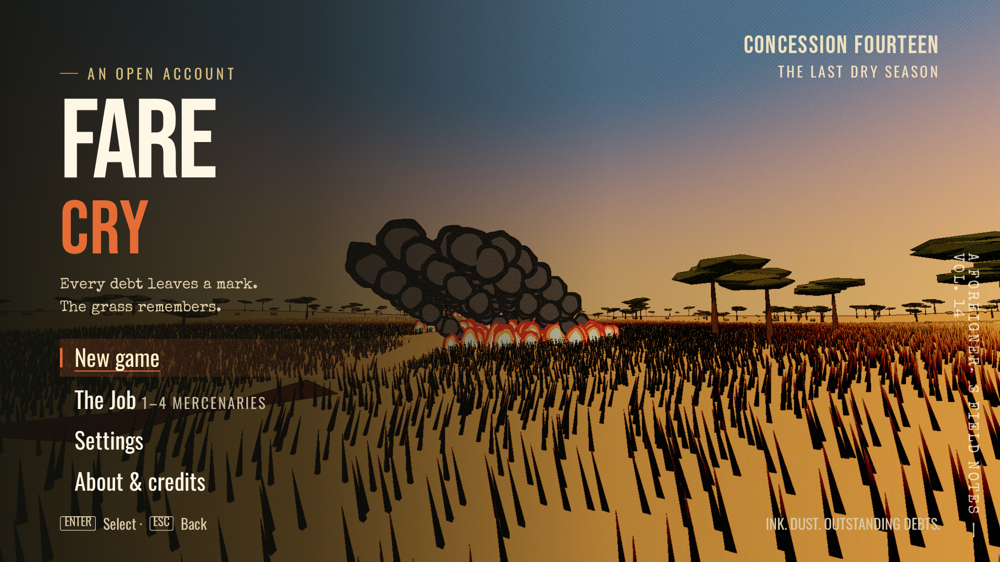
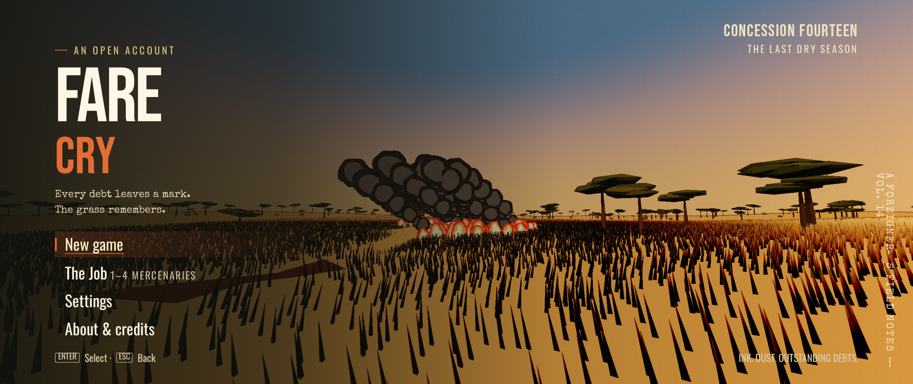
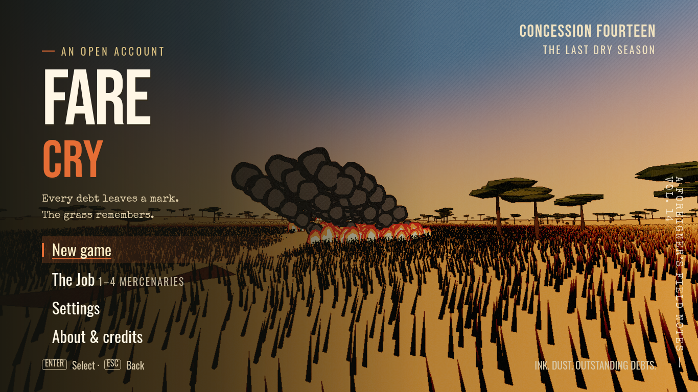
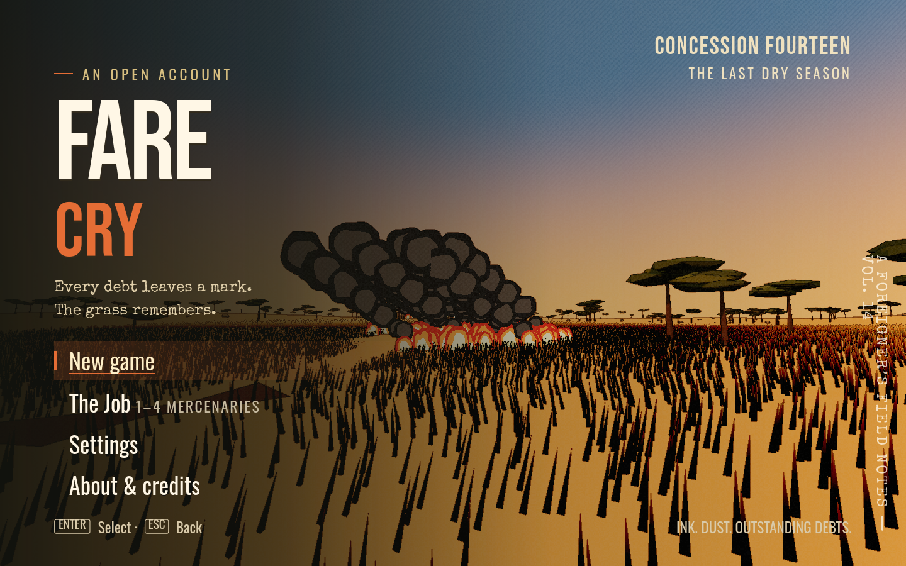
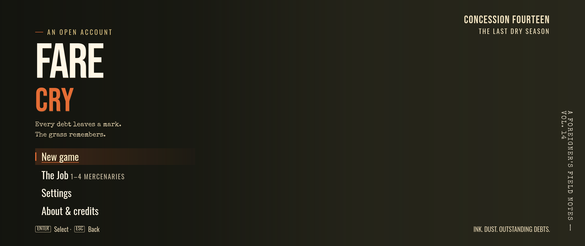

Fare Cry · 24 viewport checks
Native phone/tablet engines and Chromium, WebKit and Firefox desktops. Captured one page at a time.
Pixel 10 · chromium · 360 × 732Galaxy Z Fold 7 (open) · chromium · 984 × 1016Galaxy Tab S9 · chromium · 640 × 1024
4:3 1024x768 · chromium · 1024 × 768Laptop 1366x768 · chromium · 1366 × 76816:10 1440x900 · chromium · 1440 × 900
16:9 1920x1080 · chromium · 1920 × 1080
21:9 2560x1080 · chromium · 2560 × 1080iPhone SE · webkit · 375 × 667iPhone 17 Pro · webkit · 402 × 681iPhone 17 Pro Max · webkit · 440 × 763iPhone 17 Pro landscape · webkit · 756 × 352iPad Mini · webkit · 768 × 1024iPad Pro 11 landscape · webkit · 1194 × 8344:3 1024x768 · webkit · 1024 × 768
Laptop 1366x768 · webkit · 1366 × 768
16:10 1440x900 · webkit · 1440 × 90016:9 1920x1080 · webkit · 1920 × 1080
21:9 2560x1080 · webkit · 2560 × 1080 4:3 1024x768 · firefox · 1024 × 768
4:3 1024x768 · firefox · 1024 × 768 Laptop 1366x768 · firefox · 1366 × 768
Laptop 1366x768 · firefox · 1366 × 768 16:10 1440x900 · firefox · 1440 × 900
16:10 1440x900 · firefox · 1440 × 900 16:9 1920x1080 · firefox · 1920 × 1080
16:9 1920x1080 · firefox · 1920 × 1080 21:9 2560x1080 · firefox · 2560 × 1080
21:9 2560x1080 · firefox · 2560 × 1080